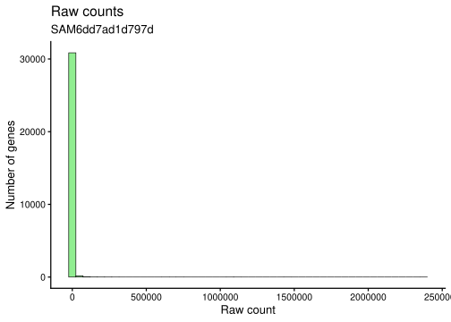
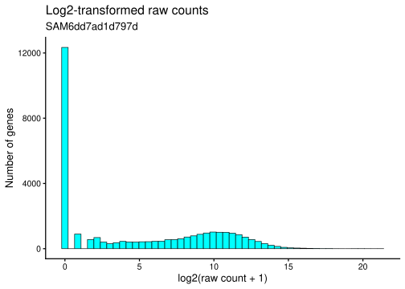
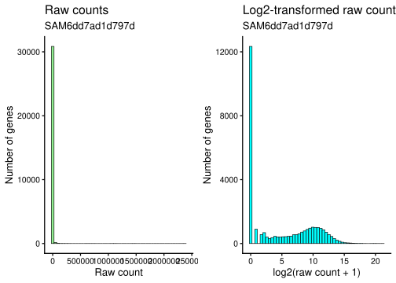
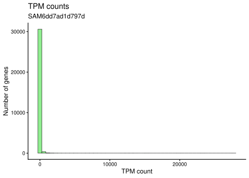
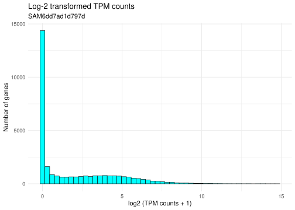
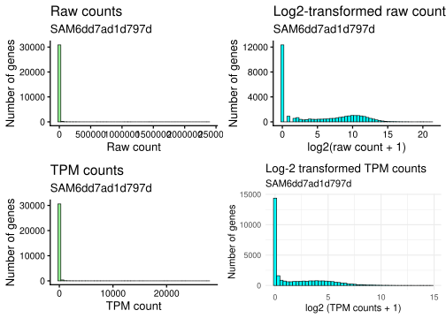
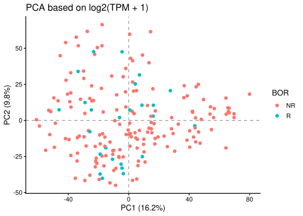

[1] 0 pat_id BOR TMB sample_id
0 0 42 0 [1] TRUE
NR R
167 25 Min. 1st Qu. Median Mean 3rd Qu. Max.
0 0 11 1341 605 5340031 Load libray
[1] 0 pat_id BOR TMB sample_id
0 0 42 0 [1] TRUE
NR R
167 25 Min. 1st Qu. Median Mean 3rd Qu. Max.
0 0 11 1341 605 5340031 [1] TRUE





PC1 PC2 PC3 PC4 PC5 PC6
Standard deviation 31.42103 24.48905 18.52900 16.27938 15.40656 14.46095
Proportion of Variance 0.16195 0.09837 0.05632 0.04347 0.03893 0.03430
Cumulative Proportion 0.16195 0.26032 0.31663 0.36010 0.39904 0.43334
PC7
Standard deviation 12.77999
Proportion of Variance 0.02679
Cumulative Proportion 0.46013[1] 0